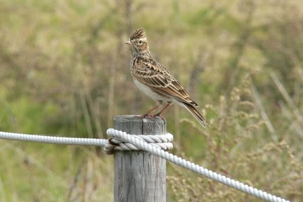
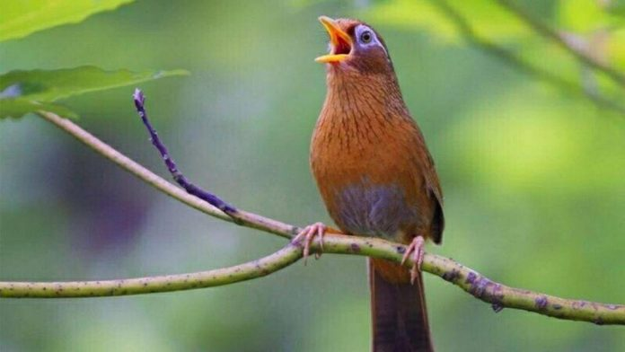
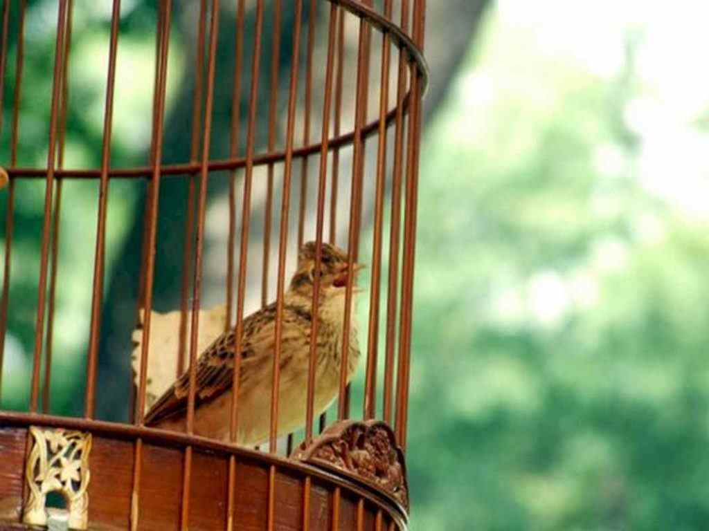

Chim Sơn Ca – Và Những Điều Bạn Cần Biết Về Chúng
Nhắc đến chim sơn ca thì ai cũng nghĩ ngay đến giọng hót tuyệt vời của chúng. Từ lâu sơn ca như tượng trưng cho một trong những tiếng hát kỳ diệu nhất trên thế gian. Vậy ngoài giọng hót ra, bạn còn biết gì về loài chim này? Hãy tìm hiểu qua bài viết này nhé.
Sơn ca là loài chim gì?
Chim sơn ca là một họ chim dạng sẻ sinh sống chủ yếu trên mặt đất và có nhiều chi nhỏ. Tên khoa học của chúng là Alauda Arvensis và thuộc ngành động vật có dây sống.
Đây là loài chim có giọng hót mê hoặc và kiểu bay lượn kì dị. Việc sơn ca sống gần ở các khu dân cư và hay phô bày giọng hót ma mị của mình đã khiến chúng được xem như là một trong tứ đại danh ca của loài chim bao gồm: sơn ca, chích chòe, họa mi, và cu gáy.
Ngoài ra chúng còn là nguồn cảm hứng vô tận cho vô số nhạc sĩ, ca sĩ hay thậm chí là thi sĩ. Hình ảnh những chú chim xinh đẹp sơn ca xuất hiện trong các bài hát, thơ văn là khá phổ biến từ xưa đến nay là một bằng chứng thuyết phục nhất.
Thêm vào đó, sơn ca còn là biểu tượng cho sự hạnh phúc, hy vọng, may mắn, tự do, niềm vui tuổi trẻ, tính sáng tạo và ngày mới.
Điển hình như trong haiku (một loại thơ) của người Nhật Bản, sơn ca hay 雲雀 (vân tước, hibari) là từ để chỉ mùa xuân trong năm mới. Hoặc với người Trung Quốc, tín ngưỡng của họ cho rằng chúng còn gọi là bách linh, là linh hồn người trở về từ cõi chết.
Đặc điểm
Về hình dạng
Sơn ca là loài chim nhỏ có kích thước bé bằng chim sẻ. Trái ngược với giọng hót đầy ma mị của chúng, vẻ ngoài lại không được nổi bật cho lắm:
Sơn ca có mỏ hình chóp, mép mỏ trên và dưới trơn, mút mỏ trên có vết lõm.
Chúng sở hữu đôi cánh dài và nhọn so với thân hình của mình với 9 hoặc 10 lông cánh sơ cấp. Bộ lông xỉn màu, đa số là màu nâu, vàng nhạt hoặc nâu hung. Đây là điều kiện tiên quyết giúp chúng ẩn mình trong các bụi cỏ khô. Với thân hình nhỏ bé và hòa lẫn vào môi trường xung quanh, có thể tránh được tầm mắt của kẻ thù và tạo điều kiện thuận lợi cho việc săn mồi.
Về đặc tính
Theo nghiên cứu, sơn ca có một số tính cách như sau:
Chimtrống thường có tiếng kêu trong trẻo nên giọng hót hay hơn chim mái.
Chúng chỉ đi chứ không nhảy và đặc biệt là chúng không thể đậu hay chuyền từ cành này sang cành khác như các loại chim thông thường.
Kết luận
Hy vọng những kiến thức mình chia sẻ về loài chim sơn ca sẽ giúp bạn đọc hiểu rõ hơn về bạn “diva” trong thiên nhiên này. Thêm vào đó, thành công đào tạo cho riêng mình một chú chim tuyệt vời nhé.